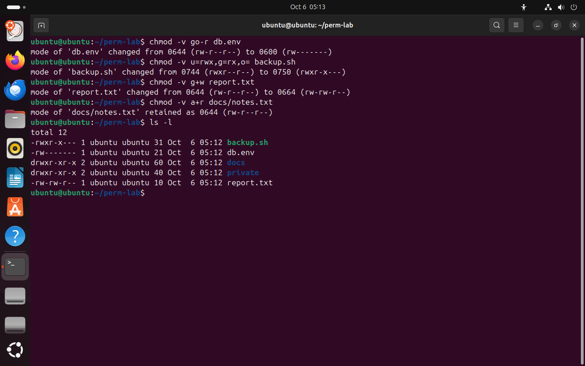
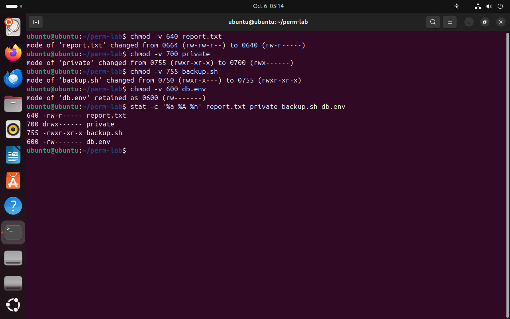

Часть 3 из 7
Команда chmod: буквы и числа
В этой части разберём две записи прав для chmod — символьную и числовую, научимся переводить одну в другую и выберем права для типичных файлов.
3.1 Символьная запись
Команда chmod (change mode — «изменить режим») меняет права файла или каталога. Менять права может владелец файла и root. Символьная запись описывает изменение из трёх частей: кому, что сделать и какие права.
| Часть | Значения | Смысл |
|---|---|---|
| кому | u, g, o, a | u — владелец (user), g — группа, o — остальные (others), a — все три тройки |
| что сделать | +, -, = | добавить права, снять права, установить ровно эти права |
| какие права | r, w, x | одно право или несколько: rx, rw |
+ и - меняют только указанные права, остальные остаются как были. = заменяет тройку целиком: g=rx даёт группе чтение и выполнение и снимает запись, если она была. Пустая правая часть убирает все права: o= закрывает файл для остальных. Несколько изменений пишут через запятую без пробелов: u=rwx,g=rx,o=.
Ключ -v (verbose) печатает для каждого файла старые и новые права числом и буквами. Если права не изменились, chmod -v пишет retained — «сохранены». Ключ -R меняет права каталога и всего его содержимого.
chmod -v go-r db.env# закрыть файл с паролем от группы и остальныхчто делает
Что делает команда. Снимает право чтения у группы и остальных и печатает права до и после.
По частям:
chmod- изменить права доступа
-v- печатать права до и после изменения
go-r- права буквами: снять у группы и остальных право r
db.env- какой файл или каталог (путь относительно текущего каталога)
chmod -v u=rwx,g=rx,o= backup.sh# три тройки сразучто делает
Что делает команда. Задаёт три тройки сразу: владельцу rwx, группе r-x, остальным ничего; печатает права до и после.
По частям:
chmod- изменить права доступа
-v- печатать права до и после изменения
u=rwx,g=rx,o=- права буквами: установить владельцу ровно rwx; установить группе ровно rx; у остальных прав нет
backup.sh- какой файл или каталог (путь относительно текущего каталога)
chmod -v g+w report.txt# добавить группе записьчто делает
Что делает команда. Добавляет группе право записи report.txt.
По частям:
chmod- изменить права доступа
-v- печатать права до и после изменения
g+w- права буквами: добавить группе право w
report.txt- какой файл или каталог (путь относительно текущего каталога)
chmod -v a+r docs/notes.txt# чтение всем — уже былочто делает
Что делает команда. Добавляет всем право чтения; права уже такие, поэтому chmod пишет retained.
По частям:
chmod- изменить права доступа
-v- печатать права до и после изменения
a+r- права буквами: добавить всем право r
docs/notes.txt- какой файл или каталог (путь относительно текущего каталога)
ls -lчто делает
Что делает команда. Выводит подробные строки файлов текущего каталога: тип, права, владельца, группу, размер и дату.
По частям:
ls- вывести содержимое каталога
-l- подробный список: права, владелец, группа, размер
- 1было 0644, стало 0600: группе и остальным чтение снято
- 2u=rwx,g=rx,o= задаёт все три тройки: 0750
- 3g+w добавил одно право: rw-rw-r--
- 4права уже были такими — retained


Весь снимок ↗chmod -v показывает права до и после изменения.
Что показывает снимок. chmod -v печатает права до и после: go-r дал 0600, u=rwx,g=rx,o= дал 0750, g+w — 0664; для notes.txt права не изменились — retained.
Где это пригодится. Буквами удобно поправить одно право, не трогая остальные: добавить группе запись, закрыть файл от остальных.
3.2 Числовая запись
В числовой записи каждая тройка — одна цифра от 0 до 7. Цифра получается сложением: чтение — 4, запись — 2, выполнение — 1. Три цифры подряд задают права владельца, группы и остальных. Числовая запись всегда задаёт права целиком, как = в символьной.
| Цифра | Сумма | Права |
|---|---|---|
7 | 4 + 2 + 1 | rwx |
6 | 4 + 2 | rw- |
5 | 4 + 1 | r-x |
4 | 4 | r-- |
0 | — | --- |
Значения 4, 2 и 1 подобраны так, что каждую цифру от 0 до 7 можно получить только одним способом: 5 — это всегда 4 + 1, то есть r и x.
Перевод из букв в число делается по тройкам: rw-r----- → rw- = 6, r-- = 4, --- = 0 → 640. Обратно — так же: 750 → 7 = rwx, 5 = r-x, 0 = ---.
| Права | Буквами | Для чего |
|---|---|---|
644 | rw-r--r-- | обычный файл: владелец пишет, остальные читают |
600 | rw------- | секреты: пароли, ключи, токены |
755 | rwxr-xr-x | программы и скрипты, общие каталоги |
700 | rwx------ | личный каталог |
640 | rw-r----- | файл для своей группы, остальным закрыт |
750 | rwxr-x--- | каталог или скрипт для своей группы |
Символьная запись удобна, когда нужно поменять одно право и не трогать остальные: «добавить группе запись». Числовая — когда права известны целиком: «секретный файл — 600». В скриптах установки чаще пишут числа: результат не зависит от того, какими права были раньше.
chmod -v 640 report.txt# группа читает, остальные нетчто делает
Что делает команда. Устанавливает права rw-r-----: группа читает, остальным ничего.
По частям:
chmod- изменить права доступа
-v- печатать права до и после изменения
640- права числом: 6 — rw- владельцу, 4 — r-- группе, 0 — --- остальным
report.txt- какой файл или каталог (путь относительно текущего каталога)
chmod -v 700 private# личный каталогчто делает
Что делает команда. Устанавливает каталогу private права rwx------: только владельцу.
По частям:
chmod- изменить права доступа
-v- печатать права до и после изменения
700- права числом: 7 — rwx владельцу, 0 — --- группе, 0 — --- остальным
private- какой файл или каталог
chmod -v 755 backup.sh# скрипт для всехчто делает
Что делает команда. Устанавливает скрипту права rwxr-xr-x: запускать могут все.
По частям:
chmod- изменить права доступа
-v- печатать права до и после изменения
755- права числом: 7 — rwx владельцу, 5 — r-x группе, 5 — r-x остальным
backup.sh- какой файл или каталог (путь относительно текущего каталога)
chmod -v 600 db.env# секрет: уже 600что делает
Что делает команда. Устанавливает файлу с паролем права rw-------; права уже такие.
По частям:
chmod- изменить права доступа
-v- печатать права до и после изменения
600- права числом: 6 — rw- владельцу, 0 — --- группе, 0 — --- остальным
db.env- какой файл или каталог (путь относительно текущего каталога)
stat -c '%a %A %n' report.txt private backup.sh db.env# число и буквы рядомчто делает
Что делает команда. Выводит права четырёх объектов числом и буквами рядом.
По частям:
stat- вывести сведения о файле из inode
-c '%a %A %n'- вывести только поля по шаблону '%a %A %n'
report.txt- о каком файле (путь относительно текущего каталога)
private- о каком файле
backup.sh- о каком файле (путь относительно текущего каталога)
db.env- о каком файле (путь относительно текущего каталога)
- 1640 = rw- r-- ---
- 2700 — каталог только для владельца
- 3755 = rwx r-x r-x
- 4stat: число и буквы описывают одни права


Весь снимок ↗Права числом и буквами для четырёх объектов набора.
Что показывает снимок. Числовая запись задаёт права целиком: 640, 700, 755, 600; stat показывает каждые права числом и буквами рядом.
Где это пригодится. В скриптах установки и инструкциях права пишут числом: 600 для ключей, 755 для программ — результат не зависит от прежних прав.
Ниже — схема для перевода. Отмечайте права галочками или вводите число: схема покажет запись буквами, обе команды chmod и что в результате разрешено каждой тройке.
- chmod числом
- chmod буквами
Итоги части 3
- Символьная запись: кому (
u g o a), что сделать (+ - =), какие права (r w x). +и-меняют отдельные права,=и числовая запись задают тройку целиком.- Цифра тройки — сумма: r = 4, w = 2, x = 1;
640=rw-r-----. - Типичные права: 644 — файл, 600 — секрет, 755 — программа, 700 — личный каталог.
chmod -vпоказывает права до и после; менять права может владелец и root.
В отчётСнимок chmod числом и таблица перевода трёх своих примеров из букв в число.